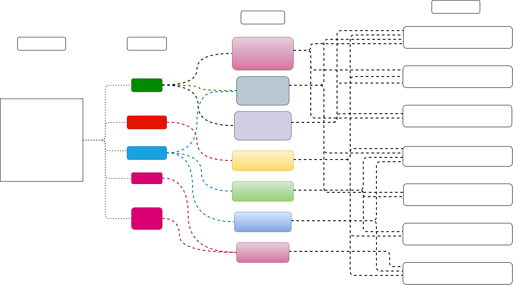
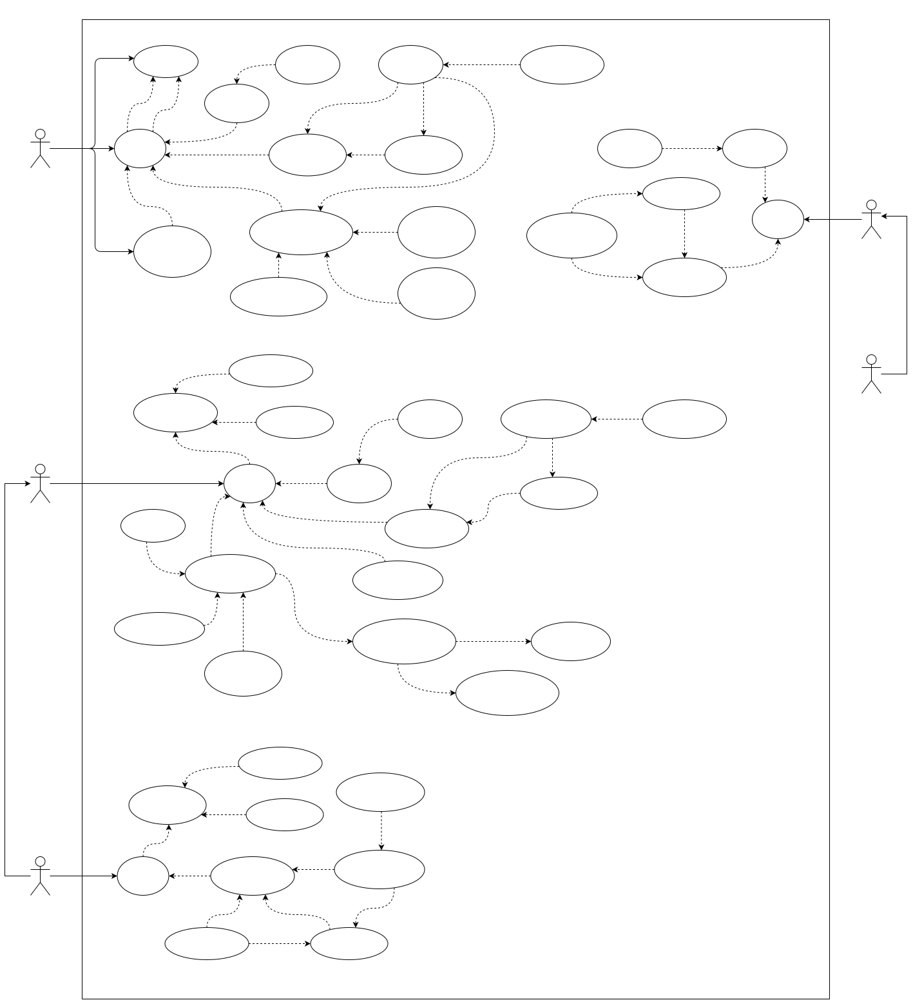
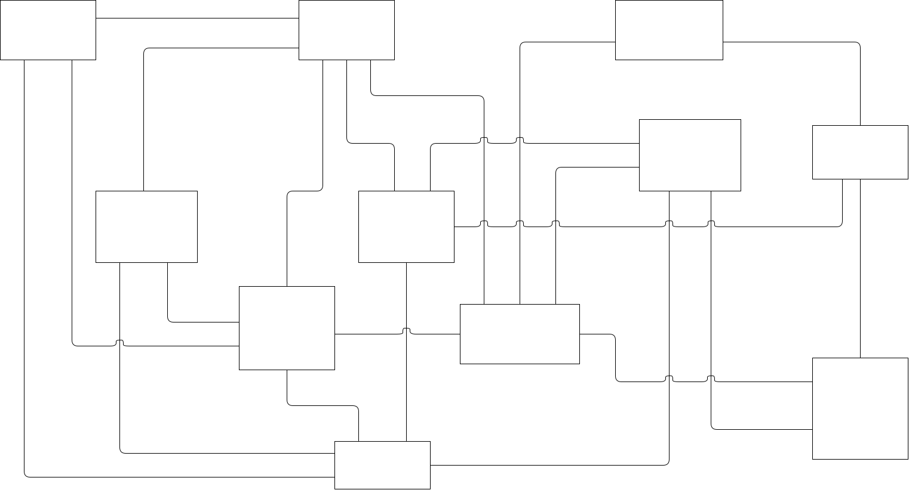
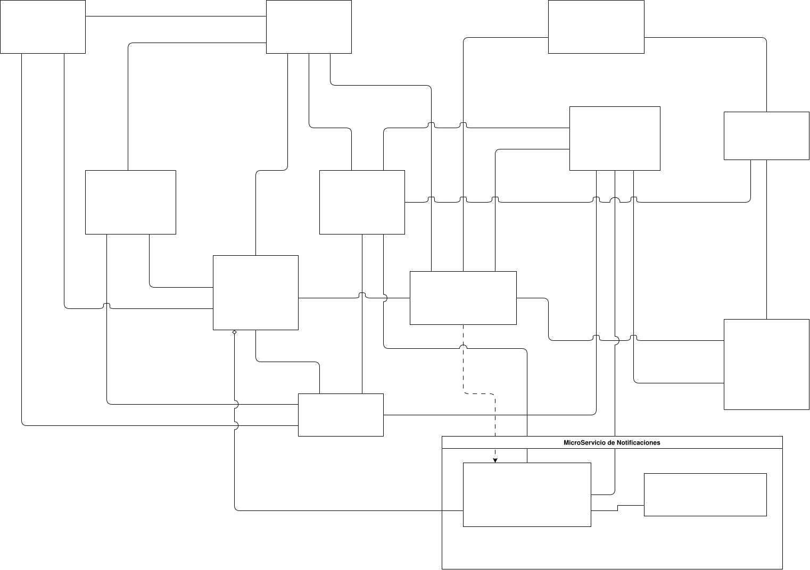
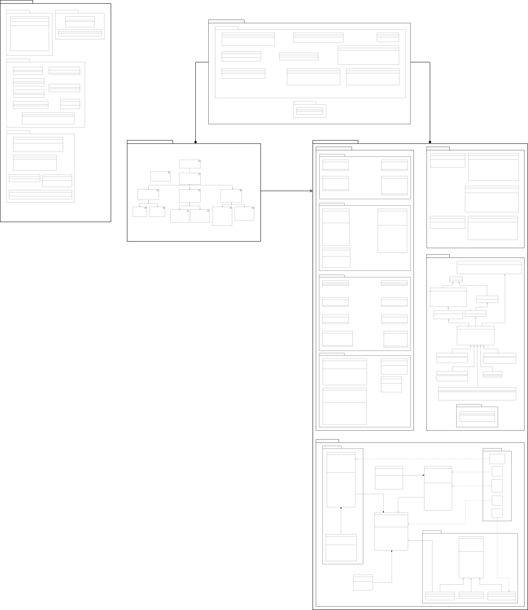

RestInn: project documentation
Hotel management system developed as a team at UTN (Programming III and IV, 2025). I was responsible for the requirements analysis and the project documentation shown on this page. The diagrams are in Spanish, as delivered for the courses.
Impact mapping
Business goal, actors, expected impacts, and the deliverables that support them.

Use cases
Use cases for each actor: client, administrator, receptionist, cleaning staff, and concierge.

Conceptual model
Main entities of the domain and their relationships.

Conceptual model with notifications
Extension of the model with notification subscriptions and delivery history, triggered when a reservation is cancelled or modified.

UML class diagram
Backend design by layer: controllers, services, repositories, DTOs, security with JWT, validations, and exception handling. The diagram is large; open it at full size to read it.
